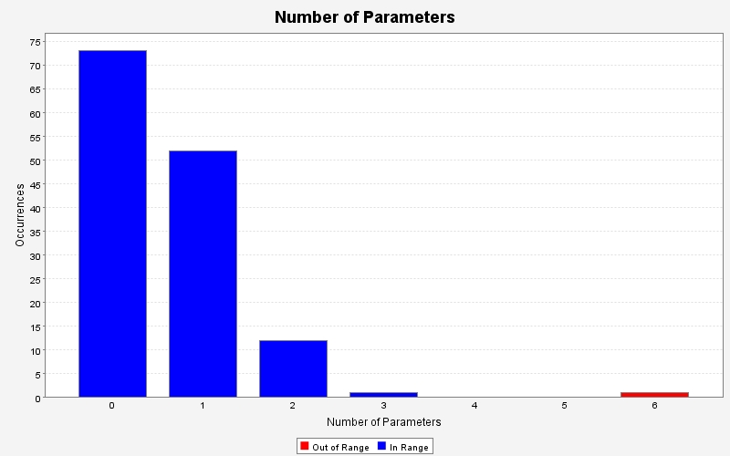

Produced by State Of Flow Eclipse Metrics on Fri May 02 00:11:19 EDT 2008
|  |
|
| CC (max) |
LOCm (max) |
NOL (max) |
NOP (max) |
NOS (max) |
Ce (max) |
LCOM-CK (max) |
LCOM-HS % (max) |
LCOM-TC % (max) |
NOF (max) |
WMC (max) |
Package |
|---|---|---|---|---|---|---|---|---|---|---|---|
| 9 | 64 | 4 | 6 | 46 | 14 | 8 | 86 | 455 | 11 | 43 | model.market.books |
| 2 | 10 | 2 | 3 | 5 | 12 | 0 | 0 | 0 | 2 | 15 | model.market |
| 14 | 96 | 6 | 2 | 114 | 16 | 0 | 92 | 1100 | 16 | 20 | gui |
| 5 | 40 | 4 | 2 | 33 | 10 | 0 | 60 | 268 | 6 | 15 | model.agents |
| 9 | 50 | 3 | 2 | 44 | 21 | 1 | 75 | 92 | 3 | 17 | support |
| 3 | 23 | 3 | 1 | 15 | 4 | - | - | - | 0 | 3 | experiments |
| 3 | 34 | 3 | 1 | 10 | 15 | 0 | 0 | 0 | 8 | 3 | model |
Produced by State Of Flow Eclipse Metrics on Fri May 02 00:11:19 EDT 2008